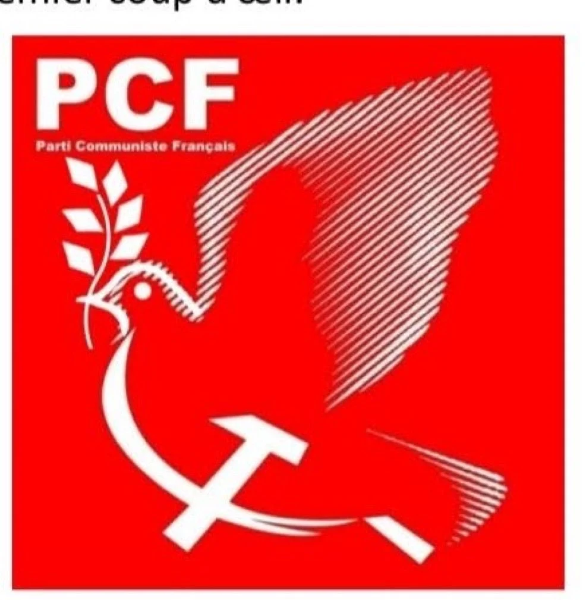

Publication sur X
Lille. Le débat sur la faucille et le marteau au 40e congrès
Date de publication sur X · 7 juillet 2026
Repères éditoriaux
Au 40e congrès à Lille, notre délégation a défendu le retour de la faucille et du marteau. Les scores évoqués dans notre fil se rapportent à des formulations différentes du vote et restent attribués aux publications d’époque.
Texte de la publication sur X
Au 40e congrès du PCF, à Lille, la faucille et le marteau ont failli revenir.
46,2% pour
C’est des outils, celui qui laboure, celui qui forge.
Le parti des producteurs qui se souvient de ce qu’il est. https://t.co/t4Rrmxh7ry

Sources
PCF 79 · @79Parti sur X · AR-0005-TW-2074472032599691272
À lire aussi · Une vidéo du PCF national relayée le 4 mars 2021
Publications associées
- Au congrès du PCF, nous avons défendu le retour de la faucille et du marteau · Compte rendu de notre délégation sur Facebook
- Notre délégation des Deux-Sèvres au 40e congrès du PCF · Compte rendu de notre délégation
- Faucille et marteau. Notre réponse sur le vote en congrès · Réponse sur le résultat du vote
- La faucille et le marteau, l’alliance de celles et ceux qui travaillent · Réponse dans le même fil